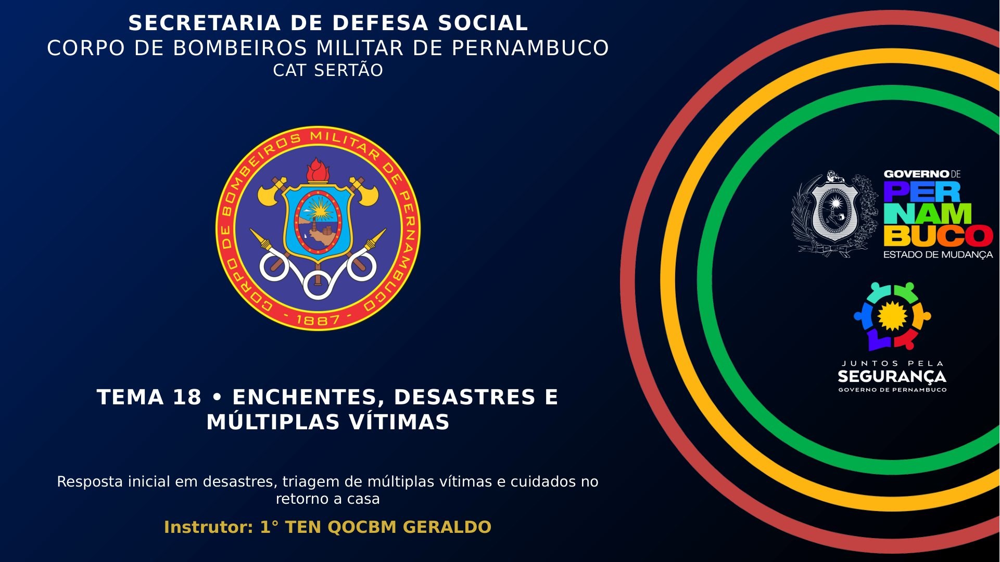

Primeiros Socorros e APH — Educação para Salvar Vidas Material didático de apoio · versão preliminar · revisão clínica pendenteInstrutor: 1° TEN QOCBM GERALDO
Versão preliminar em revisão clínica. Material didático de apoio: não é manual de atendimento, não substitui atendimento profissional e não possui homologação institucional declarada.
Enchentes, Desastres e Múltiplas Vítimas — apresentação
aprovado pelo instrutor em 25/09/2026
Moradores de área de risco, famílias, lideranças comunitárias, professores e agentes de saúde do Sertão · 25 min de apresentação (estimativa editorial) · 16 slides
1 / 16

Carregando o slide…
Teclado: ← → para navegar, Home/End para início e fim, F para tela cheia,
O para a visão geral, Esc para sair da tela cheia. No celular, arraste para o lado.